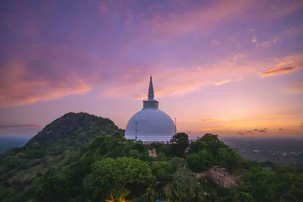

What is Anuradhapura
Anuradhapura is the first capital of Sri Lanka located in north central province of Sri Lanka. It is one of the ancient capitals of Sri Lanka which was the center of Theravada Buddhism for many centuries. Due to its ruins of an ancient Sri Lankan civilization UNESCO named it as a UNESCO world heritage site in 1982 under the name of Sacred City of Anuradhapura.
History
Anuradhapura is greatest monastic city of the ancient world that dates back to 5th Century BC remained the majestic seat of the kingdom of Sri Lanka until the 11th century A.D. Anuradhapura flourished as the Capital of Lanka from 377 BC to the end of the reign 1017 AD and was the Royal Seat for 1400 years under 130 kings as the capital of the Country.

What to see in Anuradhapura sacred city ?
Anuradhapura was Sri Lanka’s first Planned City and the First Historical Capital of Sri Lanka founded in 5th century BC gives a fascinating glimpse of a stately, well laid-out pre-Christian metropolis of massive Buddhist shrines and monasteries, splendid palaces, pavilions, and parks, bathing ponds and vast reservoirs, many of them are masterpieces of architecture, art, sculpture and engineering. Anuradhapura offers a host of memorable sightseeing highlights. The city had been reserved for the King, his ministers and for commercial activities and the suburbs had been planned as areas serving the city as well as settlements for ascetics. Site, is replete with renovated monuments, restored edifices, preserved ruins and historical sites where the archaeological excavations are still being continued. Anuradhapura was the cradle of glorious Sinhalese Buddhist civilization.
Ancient Engineering Marvels of Sri Lanka The pride of Anuradhapura is the ancient stupas and ancient reservoirs. Towering stupas or dagobas (pagoda type buildings) of stupendous domes – the marvels of ancient civil engineering of Sri Lanka were built taking into account the effects of lightening on high-rise constructions, among numerous other engineering factors. Other attractions at Anuradhapura are magnificent rock carvings of monumental richness and remarkable grace, colossal stone pillars that stand proud amidst the ruins of royal palaces, Buddhist monasteries and temples, and magnificent stone cut swimming pools with sophisticated hydrology engineering techniques.
The Thuparama Dagaba which enshrines a collar-bone relic of the Buddha, the Isurumuniya Rock Temple which is a treasure trove of sculptures, the 2,200 year old Sri Maha Bodhi (Sacred Bo Tree) which is the world’s oldest historical tree, the 1st century BC Abhayagiri and 3rd century AD Jetawana Dagabas (UNESCO World Heritage sites) 380 FT and 400 FT in height respectively are second in height only to ancient Egypt’s two mightiest pyramids at Gizeh. Anuradhapura’s three main ancient irrigation lakes are Tissawewa, Nuwarawewa in the south and Basawakulama in the north nourished its agriculture and adorned the capital for nearly two millennia as it does today.